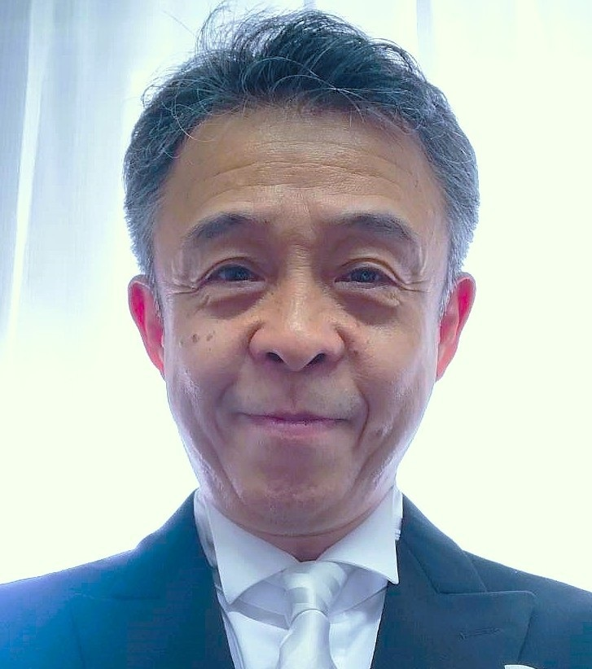

「総合的な学習（探究）の時間」は、ともすると調べ学習を「他人ごと」「きれいごと」でまとめて終わってしまいがちです。生徒それぞれが「自分ごと」「リアルごと」化し、本気で楽しみながら探究を深めていくためにはどうすればよいか、学長戦略経費や科学研究費助成事業（『中学校「地域課題解決探究学習」指導プログラムおよび教師教育の開発』）を得て、教職大学院・国際地域学科・附属中学校の教員諸氏と共同研究および実践を行っています。
「地域プロジェクト：中高生の〈探究〉を伴走支援するプロジェクト」や「探究伴走サークル」の学生たちと道南地域の中・高の授業支援に出向いたり、附属函館中学校全1年生を大学に招き「大学探究DAY」を企画・実施したりするなど、教員養成への実装も模索しています。
また、「函館市と北海道教育大学函館校および株式会社カーニバル・ジャパンとの連携協定書」の締結に尽力し、クルーズ船を活用した国際観光教育および地域振興に関する研究・教育にも取り組んでいます。
「総合的な学習（探究）の時間」を適切に指導できる教員の養成および研修
「総合的な学習（探究）の時間」の出前支援活動（学生と共に）
「総合的な学習（探究）の時間」の改善・本格導入に関する相談対応
地域の魅力発見・発信や地域課題解決に関わる学習の設計支援
クルーズ船を活用した国際観光教育・教育旅行および地域振興
これまでに積み重ねてきた研究と複数の中学・高校での実践の成果を踏まえて、「総合的な学習（探究）の時間」に関するさまざまなご相談に応じます。共同研究者・附属中学校・学生たちの協力を得るためのコーディネートも可能です。その他「クルーズ船を活用した国際観光教育および地域振興」（カーニバルジャパン社・函館市との連携協定に基づく）なども手がけています。まずはお気軽にお声かけください。

共同研究・教育プログラム開発に関するご相談を承っています。